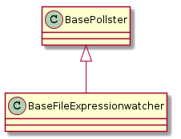
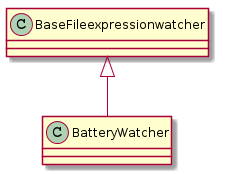

A module to watch packets and bytes received on an interface.
The File-expression watchers differ from the catters and pollsters in that they:
- repeatedly cat the file at set intervals, unlike logcatters
- send output directly to file without making calculations (unlike proc-pollsters)

| BaseFileexpressionwatcher(*args, **kwargs) | A class to repeatedly cat a file and output a csv-line. | ||
| BaseFileexpressionwatcher.stopped |
|
||
| BaseFileexpressionwatcher.name |
|
||
| BaseFileexpressionwatcher.expression_keys |
|
||
| BaseFileexpressionwatcher.connection |
|
||
| BaseFileexpressionwatcher.run() | Repeatedly cats file self.name and saves matching output |

| BatteryWatcher(*args, **kwargs) | Watches the battery data from a proc file | ||
| BatteryWatcher.header |
|
||
| BatteryWatcher.expression_keys |
|
||
| BatteryWatcher.expression |
|